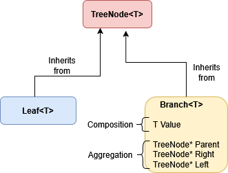

Close
Close

Estimated Reading Time: 40 Minutes
Programming Paradigms in C++
C++ is an uncommonly flexible programming language, supporting a range of different approaches to programming. On the one hand, this makes it difficult to get a feel for what “typical” C++ code looks like, but on the other it offer flexibility in dealing with problems. As C++ has evolved, it has incorporated features that appeared in a variety of other languages, particularly with regard to memory safety and functional features.
In this section we’ll talk about some programming paradigms, and the extent to which we can utilise them in C++.
Imperative Programming
C++ is, first and foremost, an imperative programming language. Imperative programs are composed of statements, which when executed may change the program state. For example in the following program:
int main()
{
int x = 5;
int y = 3;
x = x + y;
return 0;
}
- The state is the value of the variables
xandy. Initially these are5and3. Let’s write this state as $[x = 5 ,\, y = 3]$.- In principle we have access to more state than this, since we could access e.g. the system clock and so on, but we can ignore that because it’s not used in this example. State can get very complicated to model when we start including external dependencies like clocks and I/O!
- The statement
x = x + 1updates the state $[x = 5 ,\, y = 3 ] \rightarrow [x = 8 ,\, y = 3]$. It does this by first reading the values ofxandy, then adding them, and then writing the new value ofxto memory. - Note that
x = x + yis an assignment, not an equation. There is an implied time ordering: the left hand side is assigned the result of the execution of the right hand side, and thus the values ofxon the left hand side (8) and right hand side (5) are different.
By default in C++ variables are mutable, which means that their values can be changed. Imperative programming is usually centred around updating the values of mutable variables, i.e. updating the state.
In imperative programming, statements may have side effects. For example if we call a function:
int y = f(x);
- We can see from the types here that
f(x)must return an integer. - In addition to this however, it could modify the values of any part of the state to which it has access, including
x(if it is passed by reference) or any global variables which are not protected.
As C++ programmers it is not uncommon to use library code written in C. It is not uncommon for C functions to produce all their meaningful outputs as side-effects, and only return an int value indicating either success or error. For example a typical signature might be:
int MatrixInverse(double *Mat)
- This kind of function will usually return
0for success, and other numbers for different kinds of errors. - The matrix
Mat(in this case a array ofdoublereferenced by a pointer) will be updated in place, rather than being a return value.
Side effects can make it difficult to reason about programs, because we must also model the state of the program. In general we can’t know if a function will change part of the state without looking into its code, which isn’t always available to us.
Procedural Programming
Procedural programming is style of imperative programming where programs are broken up into procedure (i.e. function) calls. This is one approach to modularising code; C has no support for classes and object oriented programming, and so most C code is written procedurally. Although in C++ we have the option to write object oriented code, it’s not necessary to do so, and it can be worth thinking about when to use a free function (a function not bound to any class) instead.
- Classes which do nothing but wrap a single function are often an unnecessary complication to the code.
- Free functions do not require an object to be constructed to use, and so also save on pointless overhead if the object has no other purpose.
staticfunctions in classes, which belong to the entire class rather than an individual object, are treated essentially as free functions and can be called without any object of that class being declared.
- If a function should exist independently of an object, then it may be best to write it as a free function.
- Free functions can be called anywhere in the code which has access to the definition, and so can be a good way of code sharing. For example, multiple classes which are unrelated to each other can all call the same free function.
Object Oriented Programming
Object oriented programming (OOP) is an approach to programming in which data and functionality are typically bundled together into objects. The core concept of OOP is that an object has a public interface through which all other parts of the program interact with it, and that no information about how the object works under the hood should be necessary for another object to interact with it. For example, you can implement an associative array (a _dictionary in Python) as a binary search tree or a hash table, but that implementation choice should be entirely hidden behind the interface and should not affect any other part of the program. This abstraction through an interface provides the mechanism in various OOP languages by which different kinds of objects which implement the same interface can be swapped with one another (in C++, we do this through inheritance). This approach also allows us to protect the object’s data from interference by other parts of the program, allowing us to reason about the state of objects in our program more independently.
Objects generally have a particular purpose, or are intended to reflect a concrete concept in a model. This kind of organisation, if well implemented, can make code easier to understand and more intuitive.
- Classes should represent a single, clear idea. There’s a bit of a judgement call to be made here: we don’t want to define classes which have lots of unrelated behaviour or unrelated data elements, but it’s also possible to find yourself creating too many classes which each do so little that they don’t really represent a worthwhile concept on their own.
- Some languages like Java require all code to be part of some class, and thus Java is a hotbed of this kind of design problem. Many OOP examples that you find which originate in Java involve declaring new classes which do very little, and these are sometimes translated directly into C++ examples. Particularly when reading about OOP design patterns, consider whether there are clearer and less wasteful ways to express them.
- Classes can be used to represent abstract data types which must fulfil specific properties (sometimes called “invariants”): for example, that a list is always sorted, a binary tree is always balanced, or that two variables are always related by some formula. Most OOP languages provide access specifiers, which can be combined with member functions, to protect data and enforce these rules.
- Class members should normally be functions which are inextricable from the class itself, or which require privileged access to the class (access to private members).
- For example, if one were to write a class to represent the abstract data type
Queue, which is a first-in first-out list, then the class should represent the data held in the queue and the methods to add and remove elements from the queue. It is the responsibility of the class methods to ensure that the rules of the queue are respected: data must be removed from the queue in the same order that they are added. - If a function isn’t necessary for the use of some type, then it should be e.g. a free function which takes an argument of that type instead.
- Any member functions that you add to a class increase the amount of code which could violate the class invariants, because they have free access to the member data.
- For example, if one were to write a class to represent the abstract data type
- Inheritance is a way of expressing the type relationship that one type is a sub-type of another in many OOP languages.
- Composition and aggregation (member variables and pointers) are ways of creating complex types from more basic component types.
- The design of classes, and the use of inheritance, composition, and aggregation, should reflect the abstract model of your type as well as you can.
Take a possible binary tree implementation as an example:
- An very common alternative to using a null pointer to signal the end of a path in a tree is to divide nodes in trees into two kinds: branches and leaves.
- A
TreeNodein a tree can be aBranch(a node which has children) or aLeaf(a node with no children). This can be expressed by the inheritance relationsclass Branch : public TreeNodeandclass Leaf : public TreeNode, becauseBranchandLeafare both kinds ofTreeNode. - A
Branchhas a value of some type, pointers to its children (TreeNodepointer types which could beBranchorLeaf), and usually a pointer to its parent (TreeNodepointer). These relationships are composition (the value) and aggregation (pointers): aBranchis made of up of these components and can make use of them, but is not itself any of these things.

Influences from Functional Programming
Functional programming is an alternative approach to imperative programming. Although C++ is not a functional language in the sense that Haskell or ML are, it has taken some influence from functional programming in the last decade or so, and we can try to enforce some of the functional style in C++ by applying some conventions.
Functional programming is a style in which programs are composed of functions in the mathematical sense. Crucially this means that:
- A function’s output depends only on its arguments, not any external state.
- A function produces only a return value, there are no side effects.
In functional programming languages, variables are typically immutable, meaning they cannot be changed once their value has been assigned. This is closer to how we think of variables mathematically: if we solve an equation for $x$, the value of $x$ is not changing from line to line! It’s just a symbolic representation of a (possibly as yet unknown) value.
If you want to know more about functional programming, some good examples of functional languages are Haskell (purely functional), ML (functional first, but with some support for imperative programming), and F# (similar to ML but with additional support for OOP).
Although C++ variables are mutable and do permit assignments by default, we can make immutable variables using the const keyword:
const int x = 15; // x = x + 1; Not allowed: this will cause a compiler error!
Using const is a good way to use the compiler to enforce safety properties any time that you know there is a variable that should not change its value. Leveraging the compiler to check correctness conditions in your code is a key aspect of developing good C++ code.
Not only does const make our code safer, but it can also make it faster. Compilers are often able to make additional optimisations when they know that variables are constants.
Pure Functions and const Correctness
Pure functions mean functions with no side effects and no external state: they depend only on their arguments and their only output is their return value.
Pure functions are useful in programming because they offer greater clarity; it is easier to reason about pure functions because they behave like mathematical functions.
C++ is not really suited to pure functional programming, and we cannot stop a function from having access to global state or a member function from having access to the object’s state. We can however move towards purer functions by preventing them from making changes to the state.
There are a few things that we can do to make our functions purer:
- Pass variables by
constreference, or by value. This way the original variables can’t be modified by the function. - If you want a member function in an object to be pure, then you should declare it
const. Aconstmember function cannot change the state of the object, i.e. all the member variables are treated as constants within the body of that function.
You can declare a const member function by placing the keywords const after the function signature, as in the Area function in this Circle class:
class Circle { public: Circle(double r) : radius(r) {} double Area() const { return M_PI * radius * radius; } private: double radius; std::array<double, 3> centre; };
A pure function can be declared as a constexpr. constexpr stands for “constant expression”, and it is an expression which can (in principle) be evaluated at compile-time. The simplest usages for this are to initialise constant variables with simple expressions, such as:
double y = 1.0/7.0; constexpr double x = 1.0/7.0;
yis calculated at runtime.xis calculated at compile-time and the resulting floating point number is inserted directly into the machine code. We don’t need to do the division every time we run the program!- Your compiler may be able to optimise the calculation of
yfor you, but there are cases that are less clear cut than this which your compiler might miss.
A pure function can be a constexpr because it has no side effects and depends only on its inputs. It can be evaluated at compile time if its arguments are known are compile time.
Consider the following code snippet:
int f(const int x) { return 4*x*x - 3*x + 2; } constexpr g(const int x) { return 4*x*x - 3*x + 2; } int main() { const int x = 6; int y = 5; int a = f(x); // Calculated at runtime int b = f(y); // Calculated at runtime int c = g(x); // Calculated at compile time int d = g(y); // Calculated at runtime int e = g(5); // Calculated at compile time }
- The function
fif not a declared aconstexpreven though it is pure. This will generally need to be executed at runtime for both const and non-const arguments (unless your compiler is able to optimise it). - The function
gis aconstexprand so can be calculated at runtime when its arguments are constant, i.e. for the casesg(x)andg(5)(since literals like5are compile time constants).- These lines are therefore equivalent to writing
int c = 128;andint e = 87;respectively.
- These lines are therefore equivalent to writing
Using a constexpr can have a number of advantages:
- Code like
int c = g(x)is more expressive thanint c = 128because it makes the relationships between variables explicit. We know that ifxchanges thencshould change as well. - Now if we change
gorx,cwill be updated accordingly without us having to recalculate it and insert it into the code ourselves. - We still save on runtime costs for anything which can be known at compile time.
N.B. For simple examples like these your compiler will likely be able to optimise away these calculations at compile time if optimisations are turned on, because they are simple enough to be able to see that these variables don’t change and that these functions are pure. However the more complex your code gets, the less able the compiler is to catch these for you, so you should still mark these kinds of functions are constexpr. It pays to help your compiler out a bit!
Writing pure functions has some drawbacks: for example it makes sense to update large matrices and vectors in place to save space and time. You will need to decide when and where to use pure functions, but you should always mark functions and arguments as const/constexpr where these are applicable. This will allow the compiler to enforce const correctness, optimise your machine code, and prevent compilation of any code that violates the conditions which you have asserted. This also means that a fellow C++ programmer (or yourself, in the future!) can tell by looking at the signature of a function in a library that the function will not alter the state. This is extremely useful information for a user to know and will allow them to program more efficiently without having to check up on implementations to look for side effects.
Recursion
A recursive function is a function which calls itself as part of its definition. In order to terminate, there needs to be some base case or condition which is met so that it stops calling itself. For example:
constexpr uint factorial(uint n) { return n == 0 ? 1 : n * factorial(n-1); }
- The function will return 1 if
nis zero; this is the base case. - Otherwise the function will return
n*factorial(n-1), which is the definition of a factorial. - Recursive functions can still be pure, and still be
constexpr. We can calculate, for example,factorial(10)at compile time and save ourselves the runtime function calls. - Do note that this is just an illustrative example and there are more efficient ways to calculate factorials!
Recursion is available in both functional and imperative programming languages, and has been a part of C++ since its inception, although in imperative styles it is more common to see loops doing the same job. (Some problems cannot be solved by loops however and must use recursion, although this is comparatively rare.)
Recursion can lead to intuitive programs with a more direct translation of mathematical definitions. It can in particular help when writing divide and conquer algorithms, where problems can be solved in terms of the solutions to sub-problems.
Do bear in mind though that there can be overheads associated with the function calls, and a deep recursion can open a lot of stack frames eating up stack memory. It can nevertheless sometimes be helpful to write an easy to understand recursive solution first, and then write a more optimised version afterwards once you have established that your solution works. Remember to use unit tests to check you haven’t broken correctness in the process!
Higher Order Functions
A major characteristic of functional programming is the use of higher order functions. These are functions which accept functions as arguments.
In some programming languages functions are what are called “first class data”, in other words functions can be declared and passed around just like ordinary variables. Although C++ was not designed with this in mind, the <functional> header of the standard library provides us with some extremely useful functionality to program in this way.
std::function<>is a templated type which can represent a function with a given signature (input and output types). This can be a wrapper for an ordinary function, a lambda expression, or a callable object (a class withoperator()overloaded). This makes it easy to pass functions as arguments to other functions.std::bindcan be used to fix some of the arguments in a function to produce a new function of fewer arguments.- A key higher order function is typically called map. Map takes a function $f$, which takes an input of type $t_1$ and returns an output of type $t_2$, and produces a new function $f_\text{map}$ which takes a container of $t_1$ values and returns a container of $t_2$ values by applying $f(x)$ to each value $x$ in the container.
- Function composition can be used to create new functions. This is particularly powerful when applied to e.g. map since it allows more complex operations to mapped to entire lists, trees, or other iterable structures.
This kind of functional approach can be extremely powerful and expressive when creating flexible and abstract programs. It is important to note a few downsides however:
- Functional programming constructs in C++ tend to incur overheads due to the large number of function calls and layers of wrappers which need to be processed. Compiling with optimisations turned on can help, but for performance critical code you may need to consider writing in a more traditional imperative way.
- Programming with functional features can make debugging more difficult as programs can be very confusing to step through.
A Function Passing Example
An integrator is a good example of a function which would take another function as input. We can use std::function:
double integrate(std::function<double(double)> f, double x_0, double x_1)
- This function takes a function
ffromdoubletodouble.- e.g.
double square(double x) {return x*x;}would be an appropriate function to pass.
- e.g.
- It also takes an upper and lower limit to integrate between
- It returns a double which should be $\approx \int_{x_0}^{x_1} f(x) \, dx$
- This version can accept callable objects, lambda expressions, free functions, functions with bound parameters etc.
- Integration methods inevitably have to call the function
fmany times, which may lead to unacceptable overheads.
Or we can use a function pointer:
double integrate(double (*f)(double), double x_0, double x_1)
- This version can take a free function of type
double f(double), but not general<functional>types: no usingstd::bindor callable objects or lambda expressions with environment variable capture. You can however use a lambda expression which has no capture (empty square brackets such as[](double x){return x*x;}). - This version will run faster but sacrifices some flexibility. For a method such as integration where the function is called in a hot loop it might be the best choice though in a performance critical context.
We can partially explore this using some code which times the performance of three cases:
- Using a function pointer method with a free function.
- Using a function pointer method with a capture-free lambda.
- Using an
std::functionmethod with a free function.
#include <functional> #include <iostream> #include <chrono> using namespace std; double integrate_functional(const std::function<double(double)> f, const double x_0, const double x_1, const size_t N) { const double delta_x = (x_1 - x_0) / N; double tot{0}; for(size_t i = 0; i < N; i++) { double x = x_0 + (i + 0.5) * delta_x; tot += f(x) * delta_x; } return tot; } double integrate_pointer(double (*f)(double), const double x_0, const double x_1, const size_t N) { const double delta_x = (x_1 - x_0) / N; double tot{0}; for(size_t i = 0; i < N; i++) { double x = x_0 + (i + 0.5) * delta_x; tot += f(x) * delta_x; } return tot; } double quadratic(double x) { return x*x; } int main() { const size_t N = 1'000'000'000; auto t_1 = chrono::high_resolution_clock::now(); double v_ptr = integrate_pointer(quadratic, 0, 1, N); auto t_2 = chrono::high_resolution_clock::now(); cout << "Value pointer = " << v_ptr << endl; cout << "Time pointer = " << (double) chrono::duration_cast<chrono::microseconds>(t_2 - t_1).count() * 1e-6 << endl; t_1 = chrono::high_resolution_clock::now(); double v_ptr_lam = integrate_pointer([](double x){return x*x;}, 0, 1, N); t_2 = chrono::high_resolution_clock::now(); cout << "Value pointer lambda = " << v_ptr_lam << endl; cout << "Time pointer lambda = " << (double) chrono::duration_cast<chrono::microseconds>(t_2 - t_1).count() * 1e-6 << endl; t_1 = chrono::high_resolution_clock::now(); double v_fun = integrate_functional(quadratic, 0, 1, N); t_2 = chrono::high_resolution_clock::now(); cout << "Value functional = " << v_fun << endl; cout << "Time functional = " << (double) chrono::duration_cast<chrono::microseconds>(t_2 - t_1).count() * 1e-6 << endl; return 0; }
The results with optimisation off and on:
$ g++ -o int integration.cpp $ ./int Value pointer = 0.333333 Time pointer = 8.67147 Value pointer lambda = 0.333333 Time pointer lambda = 10.5195 Value functional = 0.333333 Time functional = 11.7649 $ g++ -o int integration.cpp -O3 $ ./int Value pointer = 0.333333 Time pointer = 0.8935 Value pointer lambda = 0.333333 Time pointer lambda = 0.883614 Value functional = 0.333333 Time functional = 2.19115
- We can see that with optimisations off a function pointer to a free function performs best, followed by a pointer to a capture-free lambda, and finally an
std::functionmethod. - With optimisations turned on the function pointer method produces almost identical timings with a free function or the lambda. The
std::functionapproach, although considerably sped up from before, now lags behind at more than double the time of the other method. - This is just one example and should not be taken as universally indicative. You should try things out and time them for yourself, especially when developing performance critical code.
- The function we are integrating is extremely simple, and therefore function call overheads will dominate in this example more than they usually would. When integrating a more complex function, the performance difference may be smaller.
- Sometimes flexibility and intuitive code are more useful than speed! Always keep your priorities clearly in mind, and don’t assume you always need the fastest possible program just for the sake of it.